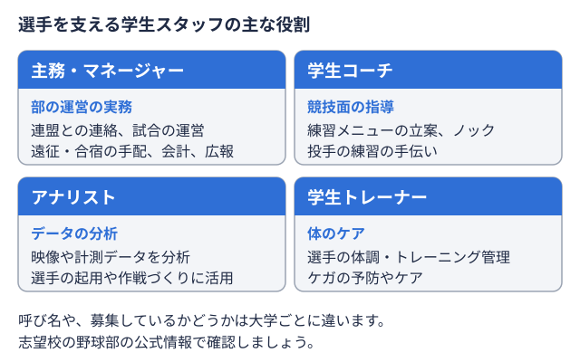
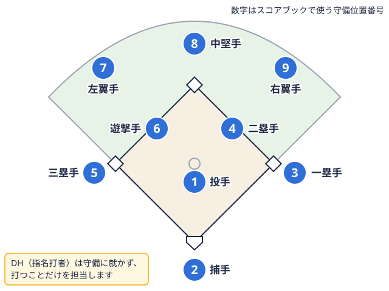

部活運営ガイド 2026-09-03
大学野球部の主務・マネージャーの仕事内容とは？業務範囲と1年の動きを解説
はじめての方向け
大学野球部というと、グラウンドで白球を追う選手の姿がまず思い浮かびますが、その活動を裏方として支えているのが主務マネージャーの代表にあたる部員。連盟や大学との連絡窓口になり、リーグ戦の運営や合宿の準備なども受け持つ。 
主務・マネージャーとはどんな役割か
大学野球部における「マネージャー」は、選手のサポートを行う裏方スタッフ全体を指す呼び方で、そのマネージャーたちのトップに立つのが「主務」です。主務は複数いるマネージャーを束ね、試合や遠征の日程調整、各種書類の作成、部品・用具の管理、OB会や報道関係者への対応などを一手に担う立場とされています。
東京六大学野球連盟の運営に関わる部分では、主務は連盟との橋渡し役を担っており、理事会や運営委員会といった会議に主将とともに出席する立場にあります。運営委員会では6大学の主務と連盟事務局がリーグ戦運営に関する変更点を確認するなど、学生でありながら連盟運営の一端を担う役員的な位置づけになっている点が、高校野球のマネージャーとは大きく異なる特徴です。
主務・マネージャーの主な業務
① 試合運営に関わる業務
- スコア作成: 公式記録につながるスコアブック試合の経過と選手の成績を、決まった記号を使って書き残す記録用紙。打率などを計算するもとのデータになる。

用語辞典で見るの記入 - 場内アナウンス・リーグ戦運営スタッフ: 試合当日の運営補助
- 対戦相手とのデータ収集: 相手投手・打者の傾向を把握するための情報収集
② 遠征・合宿の手配
試合や練習で他大学に遠征する際の交通手段・宿泊先の手配、対戦相手の学校や関係者との事務的なやり取りは、高校野球にはあまりない大学野球ならではの業務とされています。キャンプやオープン戦の日程調整、寮生活を送る部員のための食事手配なども含まれ、部の「回し方」を把握していることが求められる仕事です。
③ 部の会計・部費管理
部費や遠征費など、部の運営に関わるお金の管理も主務・マネージャーの重要な仕事です。日々の会計処理に加え、シーズンごとの支出見込みを把握し、部費だけで足りない場合の対応を検討する役割も担います。部費以外の資金調達の選択肢については、大学野球部の部費・遠征費、どう集める？主務・会計向け資金調達の選択肢ガイドで詳しく整理していますので、あわせて参考にしてください。
④ 広報・対外対応
近年はホームページやSNSの管理、部員の写真・動画撮影といった広報業務もマネージャーの仕事に含まれるようになっています。役割分担は部によって異なり、食事や広報を担当するマネージャー、ホームページや高校生向け勉強会の運営を担当するマネージャーというように、複数人で分業しているケースも見られます。部の情報発信力は、OB・OG会や企業との関係づくりにも影響する要素です。
⑤ 連盟対応
先述の通り、東京六大学野球連盟では主務が運営委員会に出席し、連盟事務局とリーグ戦運営について確認を行います。東都大学野球連盟も含め、複数の大学が参加するリーグ戦を成立させるためには、各校の主務同士・主務と連盟事務局の間での調整が欠かせません。
主務・マネージャーの1年間の動き（イメージ）
| 時期 | 主な業務 |
|---|---|
| 新歓期（4月） | 新入部員の受け入れ・部内体制の確認 |
| リーグ戦期（春季・秋季） | スコア管理、試合運営、連盟対応、遠征手配 |
| リーグ戦の合間 | 合宿・オープン戦の日程調整、用具の点検・補充 |
| シーズンオフ | 決算・次年度予算の検討、部費以外の資金調達の検討 |
| 通年 | OB会・報道対応、ホームページ・SNSの更新 |
シーズン中は目の前の試合運営に追われがちですが、シーズンオフにこそ部の運営基盤を整える時間を確保できるかどうかが、次シーズンの活動のしやすさに直結します。
主務・マネージャーに求められるスキル
業務の幅広さから、主務・マネージャーには次のようなスキルが求められます。
- 段取り力: 遠征や合宿など、複数の関係者が絡む予定を同時並行で調整する力
- 気配り: 選手・監督・OB・連盟など、立場の異なる相手に応じた対応をする力
- 事務処理能力: 書類作成や会計処理を正確にこなす力
- 発信力: ホームページやSNSを通じて部の活動を外部に伝える力
これらは在学中の部活動だけでなく、卒業後の仕事にも通じる汎用的なスキルです。主務・マネージャー経験者のキャリアについては、大学野球部の主将・キャプテン経験は転職でどう評価される？でも取り上げているリーダーシップ経験の伝え方が参考になります。
部の運営効率化という視点
主務・マネージャーの業務のうち、会計や協賛集めといった「部の外部との関係づくり」に関わる部分は、担当者一人の頑張りだけでは限界があります。企業協賛については、部の活動内容や実績を整理して掲載しておくことで、企業側からの問い合わせにつながる可能性がある無料掲載サービスとしてツナカレのようなプラットフォームもあります。主務・マネージャーが日々の業務に追われる中でも、こうした仕組みを活用して外部との接点を維持しておくことは、部の運営を持続可能にするための選択肢のひとつになります。
自部の今シーズンの立ち位置を把握しておくことも、OB・OGや連盟対応の際の説明材料になります。東京六大学野球 2026年秋季の順位表や東都大学野球1部 2026年秋季の順位表で、直近の試合結果を確認しておくとよいでしょう。
まとめ
大学野球部の主務・マネージャーは、スコア管理や試合運営にとどまらず、遠征手配、部費管理、広報、連盟対応まで幅広い業務を担う存在です。特に主務は連盟運営にも関わる役員的な立場にあり、高校野球のマネージャーとは業務の質・量ともに大きく異なります。部の活動を陰で支えるこの役割を理解することは、部員としての進路選択だけでなく、部の運営を長期的に支える視点を持つうえでも役立つはずです。
出典
遠征費・運営資金に。協賛募集を無料掲載
部活の運営者の方へ。
オフシーズン・引退後に、長期インターンという選択
部活で培った力を実務で試す。16タイプ診断（30秒）で合う企業がわかります。